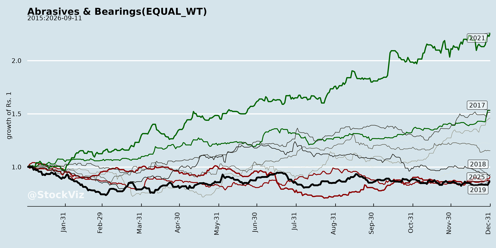
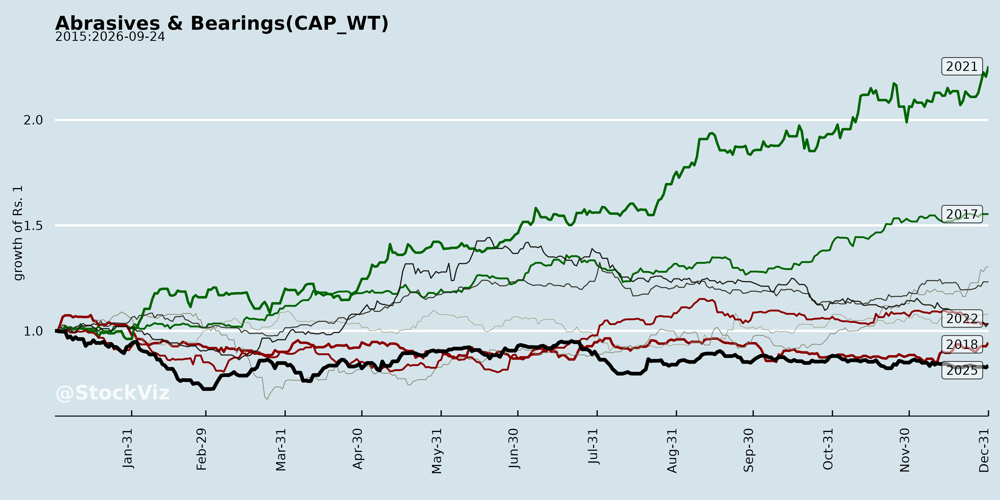
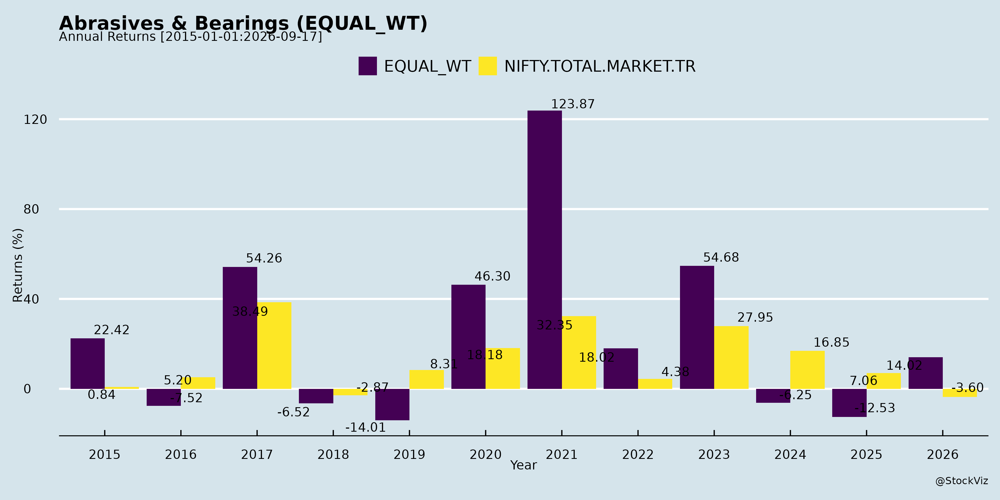
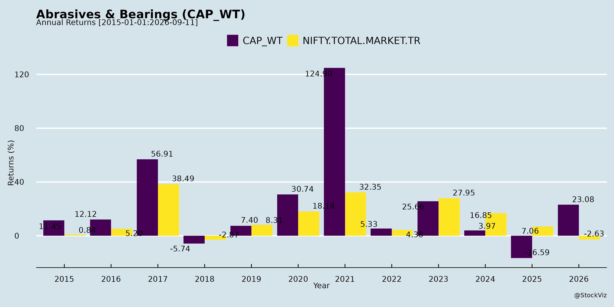
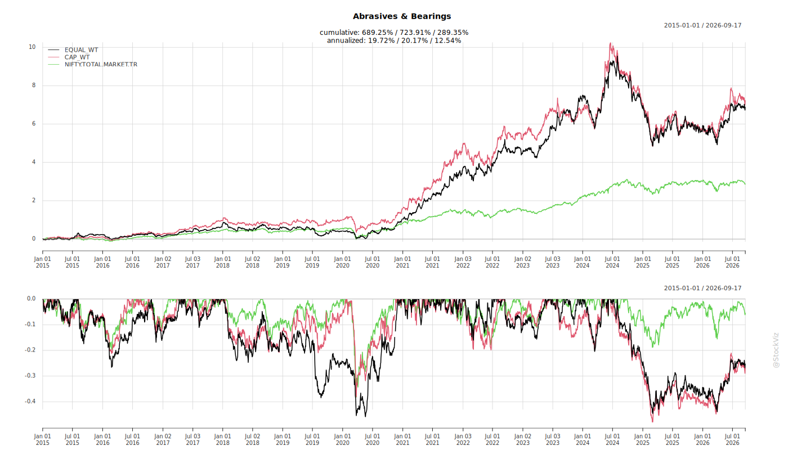
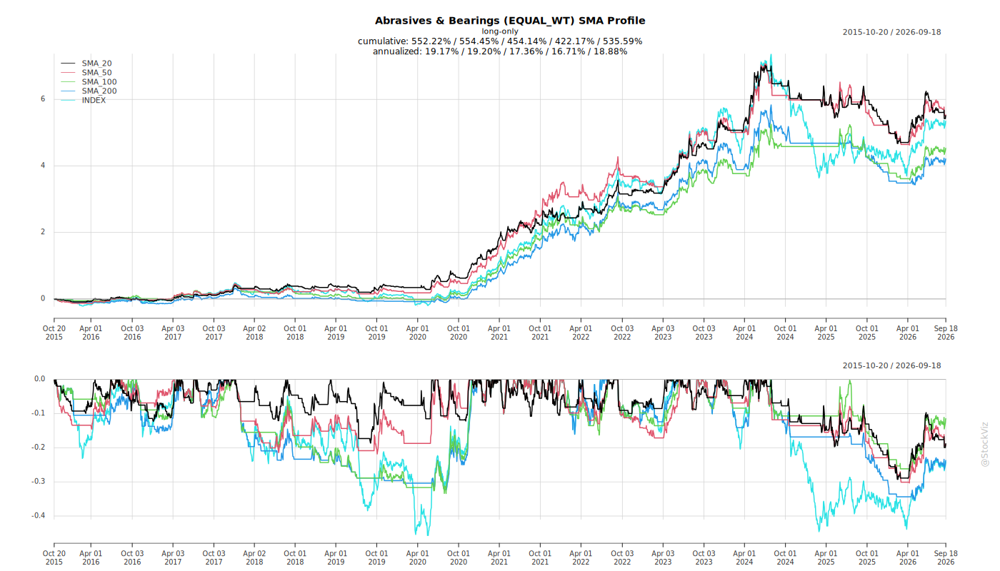
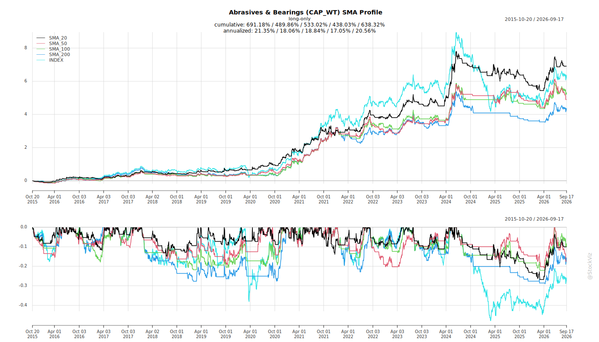
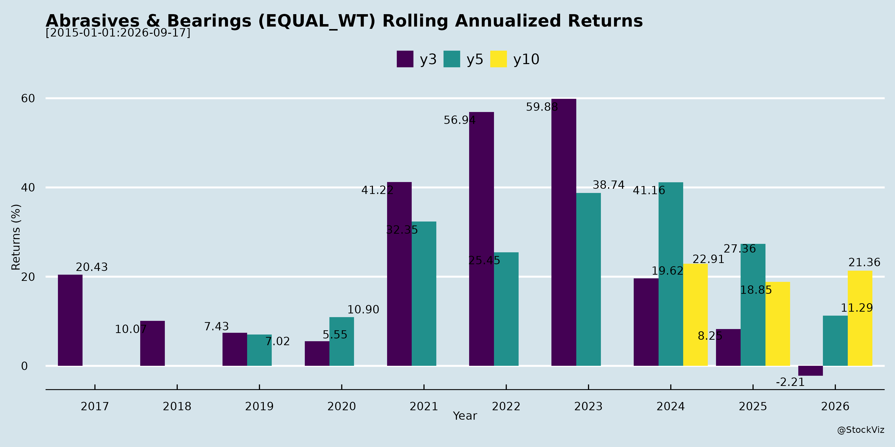
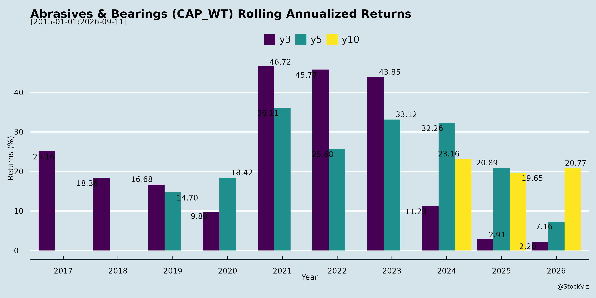

Annual Returns




Cumulative Returns and Drawdowns

SMA Scenarios


Current Distance from SMA
Rolling Returns


EBIT (% of Industry Total)
Revenue (% of Industry Total)
AI Summaries
Analyst
asof: 2025-11-27
Summary Analysis: Indian Abrasives & Bearings Sector
Using inputs from CUMI’s Q2 FY26 Earnings Call (primary focus on abrasives via standalone, RHODIUS, AWUKO), competitor mentions (e.g., Grindwell ~6% growth), and ancillary announcements (Grindwell, Timken, Wendt investor meets/roadshows indicating ongoing engagement), here’s a structured analysis. CUMI represents ~major abrasives exposure; bearings data is sparse (Timken-focused announcements signal institutional interest but no financials).
Headwinds
- Subdued Domestic Demand: Standalone abrasives flat/degrew 2.8% H1 FY26 (retail weak; inventories drawn down but slow restocking). Industrial/precision stable but not accelerating.
- Margin Compression: Consolidated abrasives PBIT margins fell to 4.1% (H1 FY26) from 8.2% (prior year); impacted by RHODIUS losses (EUR2.2M H1 post-logistics/PPA issues) and standalone mix/costs. Ceramics margins at ~20% (weakest in 4 years due to flat topline, adverse mix).
- Subsidiary Challenges: RHODIUS 9% H1 degrowth (Q1 logistics disruption); AWUKO losses flat (scale-up phase). Electrominerals tied via VAW sanctions (27-37% sales drop Q2).
- Competitive Pressures: Chinese competition in alumina (stable but noted); broader cost absorption issues from flat volumes.
- Bearings Context: Limited data; implied sector softness via CUMI retail/industrial commentary (auto salience).
Tailwinds
- Sequential Recovery: Abrasives Q2 growth 7.4% YoY/15% QoQ (standalone +7.5%); RHODIUS +5.4% YoY/+31.6% QoQ post-logistics fix.
- Inventory & Festive Dynamics: Dealer inventories thinned; GST/festival off-take signals Q3/Q4 pickup in abrasives retail.
- End-Market Support: Automotive production ramp-up boosting industrial/precision abrasives. Competitor (Grindwell) at 6% growth validates trend.
- Strong Balance Sheet: CUMI debt:equity 0.06; net debt zero ex-VAW cash. Capex on track (INR350cr FY26, H1 INR162cr).
- Bearings Momentum: Timken’s investor conf (Avendus Spark) suggests positive engagement; sector benefits from auto/industrial capex.
Growth Prospects
- Near-Term (FY26): CUMI abrasives 4-5% growth (H2 loaded); consolidated sales 5.5-6.5% (Ceramics 16-18%, Electrominerals 1-2%). Standalone abrasives H2 acceleration expected (order books, auto). Competitor parity (~6%).
- Medium-Term (2-3 Years): New products ramp-up – HP SiC (post-FY27), semiconductor ceramics (FY27+ contrib.), aerospace/defense (body/vehicle protection; DRDO/CGCRI tie-ups; certifications secured). Metallized cylinders/engineered ceramics >20% growth. Capex skewed to new areas (semicon, A&D, thin wheel relocation).
- Long-Term (to FY30): CUMI targets 2x revenue via go-to-market sharpening, NPD (e.g., treated grinds, thermal sprays), geographic expansion, monolithic refractories. Sector tailwinds: Auto, clean energy (US exports reviving), electronics/semicon fab equipment.
- Bearings: Auto OEM growth to drive; Timken/Wendt roadshows imply confidence in indigenization/defense plays.
Key Risks
- Geopolitical/Sanctions: VAW (Electrominerals) 21-31% sales drop H1; FY26 volume -25% (INR83cr H1 impact); no easy alternatives (focus on cash conservation).
- Execution Delays: Ceramics project-based (steel/cement/glass wear/refractories delays); H2 order backlog critical.
- Subsidiary Losses: RHODIUS FY26 loss EUR3.5-4M (post-PPA); AWUKO breakeven path (EUR12-14M sales target).
- Margin Volatility: Product mix, fixed costs, Chinese pricing; other expenses up marginally (INR10cr standalone).
- Macro/Sector: Retail restocking failure, auto slowdown; Wendt leadership exits/3M divestiture signal M&A turbulence (CUMI de facto promoter but constrained commentary).
- Capex Overhang: INR350cr+ spend (highest recent); ROI tied to new areas (semicon/A&D seeding phase).
Overall Outlook: Sector in recovery mode (H2 bias) with defensive balance sheets, but abrasives margins/geopolitics cap upside. Growth anchored in auto/new tech; monitor VAW resolution and H2 execution for re-rating. CUMI on-track for LTS 2030 (2x growth).
General
asof: 2025-11-27
Summary Analysis: Indian Abrasives & Bearings Sector
Using the provided disclosures from Carborundum Universal Ltd. (CARBORUNIV), Grindwell Norton Ltd. (GRINDWELL), NRB Industrial Bearings Ltd. (NIBL), and Wendt (India) Ltd. (WENDT), the sector shows positive momentum driven by expansion, compliance, and governance. No major disruptions are evident. Below is a structured analysis:
Tailwinds (Supportive Factors)
- Expansion Initiatives: Grindwell completed land record updates for a ₹16.15 Cr acquisition at Halol, Gujarat (Nov 7, 2025), signaling capacity build-up for future operations. Wendt incorporated a wholly-owned subsidiary (Wendt GmbH) in Germany (Jul 8, 2025, €0.55M investment) to boost European sales/servicing of grinding/polishing machines.
- ESG Momentum: Carborundum received an independent ESG rating from SEBI-registered CFC Finlease (Nov 5, 2025), enhancing reputation and investor appeal without company engagement.
- Strong Governance & Compliance: NIBL’s proactive shareholder outreach (Jul 28, 2025) for AGM/Annual Report sharing and KYC/PAN updates aligns with SEBI mandates, fostering trust and dematerialization.
Headwinds (Challenges/Pressures)
- Minimal Direct Headwinds: Disclosures are neutral-to-positive; no cost overruns, delays, or regulatory issues noted. Indirectly, high land costs (Grindwell) and forex exposure from Wendt’s Euro-denominated investment could pressure margins amid INR volatility.
- Routine Compliance Burden: NIBL’s efforts highlight ongoing administrative load for physical shareholders, potentially diverting focus from core ops in a demat-heavy market.
Growth Prospects
- Geographic & Capacity Expansion: Wendt’s European foray targets grinding/polishing machines/spares, tapping export markets. Grindwell’s Gujarat land supports domestic scaling in abrasives.
- Sustainability Edge: ESG rating positions Carborundum favorably for institutional inflows and green financing.
- Operational Stability: Timely disclosures and subsidiary setup indicate execution capability; sector benefits from industrial demand (e.g., auto/manufacturing recovery). NIBL’s AGM prep suggests steady FY25 performance visibility.
Key Risks
- Execution & Integration: Wendt’s new German entity (no turnover yet) faces market entry hurdles, regulatory compliance, and integration costs in a competitive EU landscape.
- Financial Exposure: Grindwell’s ₹16 Cr cash outlay and Wendt’s €0.55M (~₹5 Cr) could strain capex if ROI delays; no debt details provided.
- External Dependencies: ESG ratings rely on public data (per Carborundum), risking perception gaps. Broader risks include commodity price volatility (abrasives raw materials), forex fluctuations, and SEBI scrutiny on disclosures.
- Shareholder/Compliance Risks: NIBL’s physical folio reminders underscore demat transition risks (e.g., dividend payout restrictions post-Apr 2024).
Overall Outlook: Bullish near-term with tailwinds from expansions outweighing limited headwinds. Growth hinges on international execution and industrial capex cycles; monitor Q3 FY26 results for validation. Sector PE multiples could rerate on ESG/expansion narratives.
Investor
asof: 2025-11-27
Indian Abrasives & Bearings Sector Analysis
Based on Q2 FY26 Earnings Transcript of Carborundum Universal Ltd (CUMI – key abrasives player), supplemented by peer announcements (Grindwell Norton, Timken India, Wendt India). Sector shows mixed performance: abrasives subdued domestically but sequential recovery; bearings stable with investor engagement.
Headwinds
- Demand Softness in Standalone Abrasives: H1 FY26 degrowth of 2.8% (INR1,091cr vs. INR1,095cr); retail segment subdued due to dealer inventory buildup/drawdown delays; industrial/precision stable but automotive salience limits acceleration.
- Subsidiary Challenges in Abrasives: RHODIUS 9% H1 degrowth (EUR30.6mn), Q1 logistics disruption (now resolved); expected FY26 loss EUR3.5-4mn post-PPA. AWUKO flat losses despite 5.3% H1 growth.
- Electrominerals Pressure: VAW (Russia) 21-31% sales drop (INR83cr H1 impact) due to sanctions; 25% FY26 volume decline guided; Foskor Zirconia persistent losses (ZAR42mn H1).
- Ceramics Mix/Volume Issues: Standalone flat Q2 (INR228cr), 20% margins (weakest in 4yrs) from adverse mix, fixed cost absorption, project delays (steel, cement, glass); sequential Q2 degrowth.
- Overall Profitability: Consolidated PBIT H1 down 37% to INR192cr (VAW -INR51cr, RHODIUS -INR26cr, standalone -INR34cr); Chinese competition in Al-oxide stable but persistent.
- Peers: Wendt leadership exits/3M divestiture (potential uncertainty); Grindwell/Timken no major red flags but limited disclosure.
Tailwinds
- Sequential Recovery: Abrasives Q2 +7.4% YoY/+15% QoQ (standalone +7.5%); consolidated sales +6.4% YoY to INR1,287cr.
- Ceramics Strength: +9.4% H1 (INR601cr); Metallized Cylinders/Engineered Ceramics >20% growth; Australian sub driving Q2 +7.8%.
- Electrominerals Resilience: Standalone +6.5% H1 (volume/exports led); Foskor sales +16% H1.
- Balance Sheet: Net debt zero (INR215cr cash ex-VAW); D/E 0.06; capex on track (INR162cr H1 vs. INR350cr FY26 plan).
- Dealer Dynamics: Retail inventories thinned post-festivals; GST/festival pickup aids Q3/Q4.
- Peers: Timken/Grindwell investor conferences signal engagement; Wendt roadshows amid divestiture (HSBC-led).
Growth Prospects
- FY26 Guidance (Maintained): Consolidated sales +5.5-6.5%; Abrasives +4-5%; Ceramics +16-18%; Electrominerals +1-2%; PBIT margins: Ceramics 23.5-23.7%, EMD 4.5-5.5%, Abrasives 6-6.5%, overall 8.2-8.5%.
- H2 Acceleration: Standalone Ceramics/Abrasives loaded (order books/projects); Electrominerals trajectory intact.
- Long-Term (LTS to FY30): 5-year revenue doubling via NPD/go-to-market sharpening; capex majority (~INR350cr FY26) in new areas (semiconductor ceramics from FY27, HP SiC/aerospace-defence FY27-28, thermal spray powders).
- Sector Drivers: Automotive production pickup; clean energy/U.S. exports reviving; defence (DRDO/CGCRI tie-ups, 4-level certifications); electronics/semicon fabs (anchor customers).
- Peers: Grindwell (competitor +6% growth noted); Timken bearings poised for industrial recovery.
Key Risks
- Geopolitical (High): VAW sanctions persist (no lift-off visibility); 61% H1 profit drop; limits exports/new markets.
- Operational/Execution: Subsidiary losses (RHODIUS/AWUKO breakeven delayed); project delays in Wear/Refractories; logistics/supply chain echoes.
- Competition/Margins: Chinese Al-oxide pressure; product mix volatility; fixed costs on subdued topline.
- Demand/Macro: Retail/industrial slowdown prolongs; sector delays (steel/cement/glass); automotive unproven.
- Peers/Related: Wendt promoter shifts/talent exits (CUMI exposure?); capex ramp-up (INR350cr+) without quick returns.
- Overall: H1 PBIT drop signals vulnerability; FY26 growth modest vs. historical mid-high teens.
Summary: Sector faces near-term headwinds from sanctions/subsidiaries (VAW dominant drag), but tailwinds in ceramics/new tech (semicon/defence) and H2 recovery support mid-single-digit FY26 growth. Long-term prospects strong (doubling by FY30) with robust balance sheet/capex, but risks tied to geopolitics/execution. Monitor VAW resolution and H2 standalone traction.
Press Release
asof: 2025-11-27
Analysis of Indian Abrasives Sector (Using CUMI & Wendt as Proxies)
The Indian abrasives sector, represented by key players like Carborundum Universal Ltd (CUMI) and Wendt (India) Ltd (both Murugappa Group companies), shows modest volume growth amid pricing pressures and external shocks. CUMI’s consolidated H1FY26 sales grew 4.2% YoY to ₹2,493 Cr (PAT down 41% to ₹136 Cr), while Wendt’s consolidated H1 sales grew 4% to ₹1,078 Cr (PAT down 65% to ₹65 Cr). Abrasives segment (core for both) remains flat/declining standalone but shows pockets of resilience consolidated. Below is a structured summary of headwinds, tailwinds, growth prospects, and key risks.
Headwinds (Key Challenges Slowing Momentum)
- Geopolitical Disruptions: Severe impact from Russia-Ukraine sanctions on CUMI’s step-down sub Volzhsky Abrasive Works (VAW). Q2 consolidated Electrominerals flat (vs. 1.6% QoQ decline); prior-year ₹104 Cr impairment; ₹240 Cr cash trapped (non-repatriable). Wendt cites volatile geopolitics reducing exports to Indonesia, UK, Eastern Europe (5% YoY export drop).
- Margin Compression: Product mix shift (lower high-margin machines/super abrasives at Wendt/CUMI); standalone Abrasives PBIT down (CUMI: ₹47 Cr vs. ₹50 Cr YoY; Wendt flat sales but 57% PAT drop). Higher input costs (materials up ~5-10% YoY; power/fuel elevated).
- Demand Softness: Standalone Abrasives degrew 2.8% H1 (CUMI); Wendt Super Abrasives flat YoY. Domestic flatness offset by weak export offtake.
- One-offs: Q1FY26 CUMI PAT boosted by ₹68 Cr dividend (normalizing H1); Wendt amortization of “Wendt brand”.
Tailwinds (Supportive Factors)
- Segmental Resilience: Ceramics strong (CUMI consolidated +9.4% H1 to ₹601 Cr; standalone +4.9%). Electrominerals standalone growth (CUMI +6.5%; Wendt Super Abrasives stable at ~75% of sales).
- Domestic Stability: CUMI standalone sales +3% H1; Wendt domestic flat but resilient (79% of standalone sales).
- Group Synergies: Murugappa’s scale (₹90,178 Cr revenue); ongoing capex (CUMI H1 ₹162 Cr vs. ₹124 Cr YoY) signals capacity expansion.
- Export Pockets: CUMI consolidated Abrasives +7.4% Q2 (led by Germany/Australia subs); Wendt consolidated +2% Q2.
Growth Prospects (Medium-Term Opportunities)
- ****High**: Ceramics (9-10% CAGR potential; driven by technical/industrial demand). Electrominerals recovery if VAW stabilizes.
- Moderate: Abrasives (global auto/metalworking recovery; CUMI/Rhodius Germany growth). Wendt’s super abrasives/machines tied to precision engineering boom (India’s capex cycle).
- Overall Sector: 5-8% CAGR FY26-28 (infrastructure/auto EV push; India abrasives mkt ~₹15,000 Cr, 8-10% structural growth). Export revival post-geopolitics; capex normalization (CUMI debt-equity 0.06x).
- Catalysts: PLI schemes, Murugappa expansion (e.g., Wendt sub investments ₹55 Cr H1).
Key Risks (High-Impact Threats)
| Geopolitical/Sanctions |
VAW sanctions (CUMI: ongoing monitoring; Wendt exports volatile). |
Diversification (standalone 50%+ sales). |
High/High |
| Forex & Impairment |
Currency swings (CUMI OCI +₹120 Cr H1); asset recoverability (VAW ₹270 Bn exposure). |
Hedging; auditor emphasis (no new impairment FY26). |
Medium/High |
| Demand/Cyclical |
Industrial slowdown (auto/infra); Machines/Accessories loss-making (Wendt -₹37 Cr Q2). |
Domestic focus; capex buffer. |
Medium/Medium |
| Cost Inflation |
Power/fuel +10% YoY (CUMI); materials volatility. |
Efficiency (employee costs controlled). |
Low/Medium |
| Execution |
High capex (CUMI CWIP +₹13 Bn); sub integration (Wendt Thailand/Germany losses). |
Strong balance sheets (CUMI equity ₹3,874 Cr; Wendt ROE ~35%). |
Low/Medium |
Summary Verdict: Sector faces short-term headwinds from geopolitics (Russia focus) and mix issues (H1 PAT -40-65% YoY), but tailwinds in Ceramics/Electrominerals and capex signal resilient 4-6% sales growth FY26. Prospects brighten with infra/auto tailwinds (8% mkt CAGR), but Russia sanctions remain top risk (monitor VAW liquidity). Favor diversified players like CUMI; Wendt for niche super-abrasives premium. Overall outlook: Neutral to Positive (watch Q3 exports).
(Analysis based solely on provided Q2/H1FY26 results; excludes bearings-specific data as absent in inputs.)
Copyright © 2023 SAS Data Analytics Pvt. Ltd. All rights reserved.
🐞